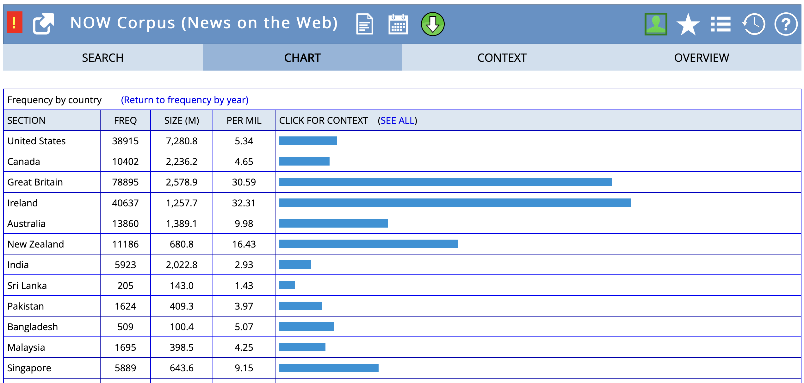
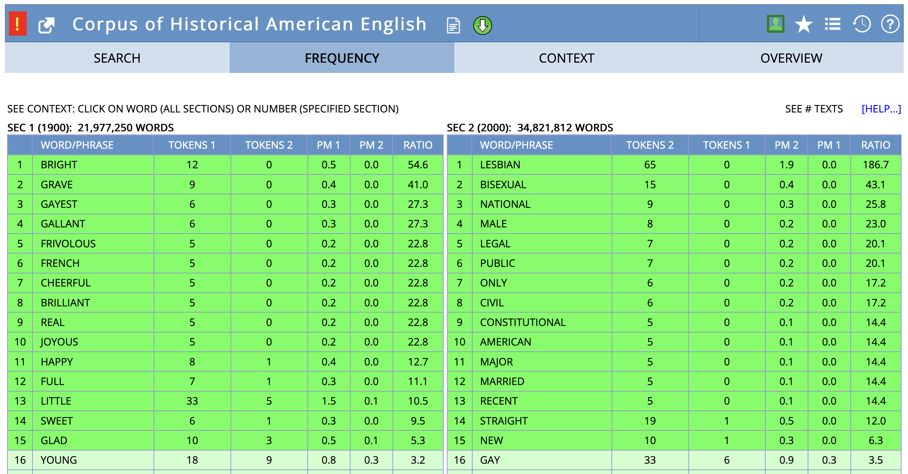
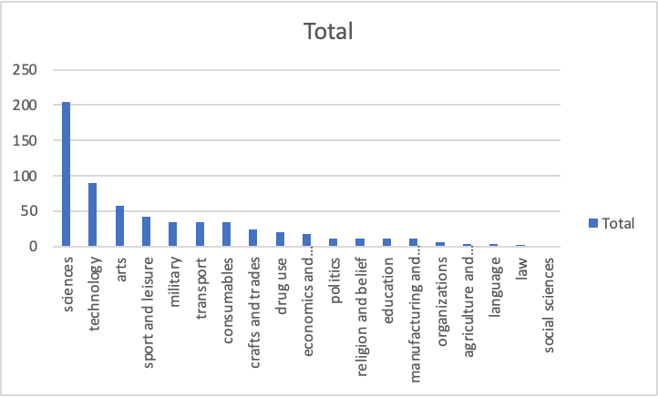
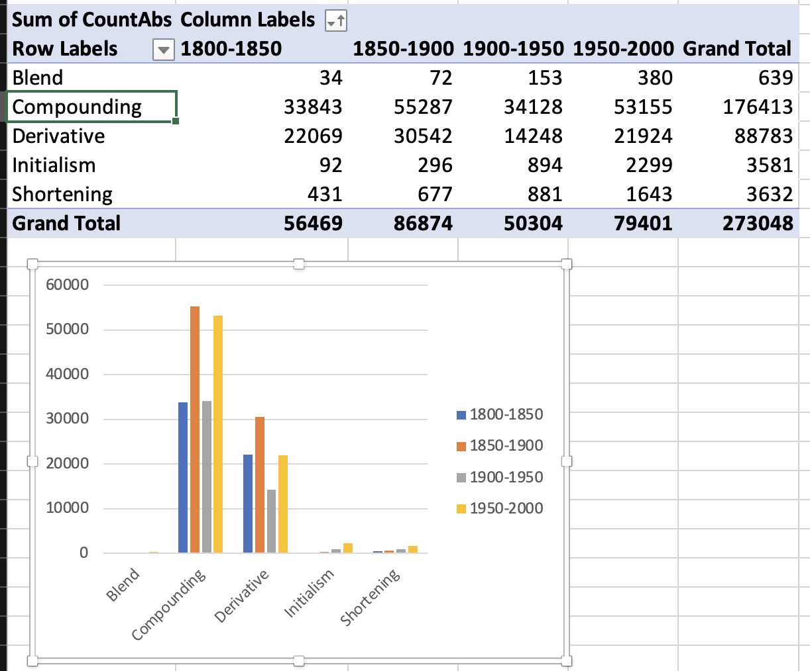

Research projects: Studying lexis empirically
Seminar ‘Lexicology’
June 25, 2025
Outline
- Recap: studying lexical semantics
- Term paper requirements and consulting
- Developing research projects: topics, questions, and methods
- Research areas and empirical examples
- Data sources and analysis techniques
- Academic resources and tools
- Workshop: developing your project proposal
Recap: studying lexical semantics
In pairs (3-4 mins):
- Think back to our semantics session. What aspect of lexicology has sparked your curiosity most?
- What kind of research question would you like to explore?
- What data sources (dictionaries, corpora) could help answer your question?
Connection to previous work: Remember studying differences between clippings (admin, exam, phone) and their source forms using collocation analysis?
Term Papers
Requirements and format
- 3 ECTS: short paper (≈ 3–5 pages)
- 6 ECTS: long paper (≈ 10–12 pages)
- 9 ECTS: project report (≈ 3 pages)
Deadlines
- Short papers and project reports: 29 August
- Long papers: 8 September
Term paper consulting
Requirements
- Register via email
- Send preliminary information one day before meeting:
- research questions and hypotheses
- theoretical background, data and method
- table of contents and bibliography
Available dates
- 28 July (10:00, 16:00)
- 8 August (10:00, 13:00)
Zoom details
- https://lmu-munich.zoom.us/j/5385530182?pwd=SE5iZDJGQlZ1V3dpN2Q4NW45WjF5Zz09
- Meeting ID: 538 553 0182
- Passcode: 531379
Developing Research Projects
Goals for term papers
- Research question with a linguistic focus
- Empirical study using real data
- Use corpus and/or dictionary data
- Contribute new insights to lexicology
Your term paper should demonstrate:
- Understanding of theoretical concepts
- Ability to work with linguistic data
- Critical analysis and interpretation skills
What makes a good topic?
A good research topic:
- is not too general but also not too specific
- has further relevance for linguistics
- includes new aspects based on state of the art
- is interesting and doable
- is based on previous knowledge and/or observations
- allows for a number of research questions
From topic to title
Your title is the business card of your paper:
- Must be informative and explicit
- Must have a reasonable link to the content
- Must not raise expectations that are not met
- Often good to use a subtitle
Finding research questions
Research questions can come from:
- Previous literature
- suggestions for future research
- replicating someone else’s work
- identifying gaps in knowledge
- Observation
- noticing patterns in language use
- personal linguistic experiences
- Empirical findings
- discoveries within your own data analysis
Research questions: Key criteria
Ask yourself:
- Is it broad enough to be interesting?
- Is it narrow enough to be doable?
- Does it have a strong enough linguistic focus?
- What do I expect the outcome to be? (hypotheses)
- Why do I expect these results?
- How does my question relate to previous work?
Academic paper structure
- Introduction: Contextualise and motivate
- Theoretical Background: Review relevant literature
- Data: Describe your dataset
- Method: Explain your approach
- Results: Present findings clearly
- Discussion: Interpret and discuss
- Conclusion: Summarise and reflect
Research Areas and Examples
Lexical variation
How do words vary across:
- Text types: e.g. academic vs. social media
- Regional varieties: e.g. British vs. American English
- Time periods: e.g. historical change
- Word-formation processes: e.g. blending differences between registers
Example: Frequency of autumn vs fall across countries in NOW Corpus
Regional variation analysis showing British vs. American English preferences.

Semantic variation: problem across text types

Lexical change
- Frequency change: How word usage changes over time
- Meaning change: How word meanings evolve
Example: Collocates of gay in COHA showing semantic shift

Word-formation patterns
- Distribution of word-formation processes across domains
- Productivity of morphological processes over time
- Semantic constraints on word formation
Distribution of shortenings across semantic domains:

Productivity of word-formation processes over time:
Data Sources and Methods
Types of data
Corpus data
- Large collections of authentic language use
- Diachronic corpora (COHA) vs. synchronic (BNC)
- Specialised corpora (academic, social media)
Dictionary data
- Historical dictionaries (OED)
- Contemporary dictionaries
- Learner dictionaries
Key corpus resources
Selected examples:
Synchronic corpora
- BNC 1994: British National Corpus (100M words)
- BNC 2014: British National Corpus (100M words)
Diachronic corpora
- EEBO: Early English Books Online
- Google Books Ngram: Historical frequency data
- COHA: Corpus of Historical American English (1810s-2000s)
- COCA: Corpus of Contemporary American English
- NOW: News on the Web corpus (real-time)
- English Trends: huge monitor corpus available on Sketch Engine
Corpus analysis examples
Text type variation: brother vs bro in COCA
Distribution across genres shows clear patterns:
- brother: more formal registers (academic, news)
- bro: informal contexts (spoken, fiction)
COCA analysis for brother:

COCA analysis for bro:

Academic Resources and Tools
Finding references
Academic databases:
- LLBA: Linguistics and Language Behavior Abstracts
- MLA: International Bibliography
- JSTOR: Multidisciplinary digital library
- John Benjamins e-Platform: Linguistic publications
- ScienceDirect: Elsevier journals
- Cambridge Core: Cambridge University Press
Web-based tools:
- Google Scholar: comprehensive academic search engine
- Semantic Scholar: AI-powered research tool with citation analysis
- Connected Papers: visual maps of research connections
- OpenAlex: open source academic database
- Elicit.org: AI research assistant for literature reviews
Strategies:
- Schneeballprinzip: Find one good reference, follow its citations
- Start with handbooks for quality overviews
- Use research network platforms (ResearchGate, Academia.edu)
Citation management
Zotero (recommended):
- Free, open-source reference manager
- Browser plugin for easy capturing
- Automatic formatting in e.g. MS Word, Google Docs
- Collaborative features for group projects
Alternatives: Mendeley, EndNote, BibTeX
Best practices:
- Start collecting references early
- Always check for citation accuracy
- Use consistent citation styles
Citation styles
For this course, use author-date format:
- In-text: “Corpus analysis reveals…” (Hilpert et al. 2023: 25)
- Bibliography: Consistent formatting following one style guide
Recommended guides:
Writing tools
AI-assisted tools:
- DeepL Write
- Grammarly
- LanguageTool: free alternative to Grammarly
Use responsibly - these are aids, not replacements for your thinking!
Reference management
Recommended: Use Zotero for:
- Collecting and organising sources
- Automatic citation formatting
- Collaboration and sharing
- Integration with word processors
Alternative: Maintain one consistent bibliography file manually
Workshop: Your Research Project
Individual task (10 mins)
Choose a research area and develop your project:
- Select a research area (lexical variation, change, or word-formation)
- Formulate a specific research question
- Consider what data you would need
- Think about potential methods of analysis
Use the worksheet to structure your thoughts.
Project worksheet
- Topic: _______________
- Research Question: _______________
- Hypotheses: What do you expect to find, and why?
- Data: What corpus or dictionary data would you use?
- Method: How would you analyse the data?
- Challenges: What difficulties might you encounter?
Sharing and feedback (5 mins)
In small groups:
- Present your research question
- Get feedback: Is it clear? Interesting? Doable?
- Discuss data sources and methods
- Suggest improvements
Rotate so everyone presents and receives feedback.
Getting help
Resources available:
- Term paper consulting: Have a meeting with me to discuss your project
- Course materials: Slides and readings on corpus methods
- Library workshops: Research skills and database access
- Writing centre: Academic writing support
Remember: Start early, ask questions, and use the resources available!
Summary
- Good research projects combine theoretical insight with empirical analysis.
- Research questions should be focused, linguistically relevant, and answerable with available data.
- Corpus and dictionary data offer rich opportunities for lexicological research.
- Academic writing follows established conventions - learn and apply them consistently.
- Planning and preparation are key to successful research projects.